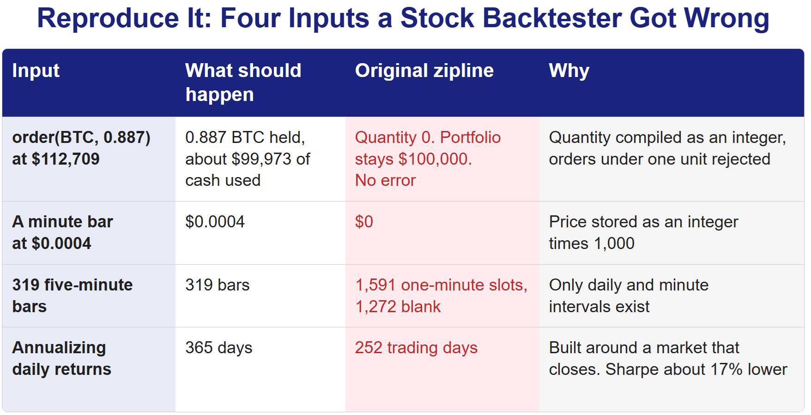
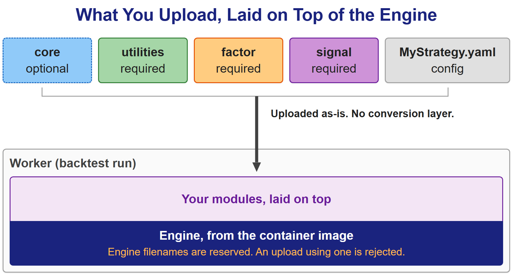
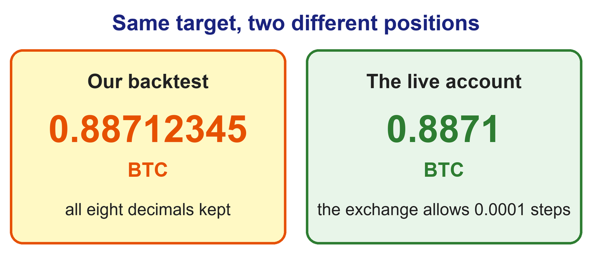

Ariane 5 broke apart because reused code assumed a number would always fit. Our first backtester was reused too, and it assumed every trade was a whole share.
On June 4, 1996, the first Ariane 5 broke apart 37 seconds after liftoff. Its guidance software had been reused from Ariane 4, where one velocity value always fit in a 16-bit integer. On the faster new rocket it didn't, and the conversion overflowed.
Our first backtester was reused code too, written for stock markets, where a share is a whole number. We ordered 0.887 BTC in it, and the portfolio didn't move a cent. Nothing raised an error. That backtester is why we built our own.
An Ariane 5 on the launch pad in 2021. The rocket's first flight, in 1996, ended 37 seconds after liftoff. Photo: Bill Ingalls, via Wikimedia Commons, public domain.

The Engine We Started With
Our first backtest engine was zipline, an open-source backtester Quantopian released for US stocks. Quantopian wound down in November 2020, and the community keeps zipline going as zipline-reloaded. We took it and kept adapting it to a market it was never built for: crypto perpetual futures, trading every minute of every day, in fractional quantities.
We didn't build our own at the start for a simple reason: it takes a long time. Before you can test a single idea you need portfolio accounting, a simulation clock, a model of how orders fill, and a stack of performance metrics. Zipline had all of that, tested, with years of real use behind it.
The problem was that all of that use was in stocks.
Three Things a Stock Backtester Can't Do
The first was the unit of trade. We ordered 0.887 BTC in a backtest and the portfolio stayed at exactly 100,000 dollars. The price feed was fine, Bitcoin came through at 112,709 dollars, and the order quantity arrived at the fill layer intact. Then it became zero, with no exception and nothing in the log. Stocks trade in whole shares, so quantities are integers, and that wasn't a setting we could turn off. It was baked into code that had already been compiled: the quantity was declared as an integer, a check rejected anything smaller than one unit, and a rounding function cut the order to an integer on its way out. Editing the Python changed nothing, because the part that mattered was compiled. Fixing it meant changing the quantity to a floating-point type in the compiled source and rebuilding it every time we built our container. Prices had the same problem: minute bars were stored as integers multiplied by a thousand, so any coin trading below a tenth of a cent was stored as zero.
Here is the path that one order took through the engine:
# The path that order took, simplified.
order(BTC, 0.887) # quantity requested
round_order(0.887) -> 0 # cut to an integer on the way out
create_transaction -> skipped # amount below one unit, no fill
portfolio value -> 100000.0 # unchanged, no exception anywhereThe second was time. Zipline knows two intervals, daily and minute. It has no concept of a 5- or 15-minute bar, and that's how a lot of our strategies rebalance. Feed it 319 five-minute bars and the engine, which had already worked out that the same period should hold 1,591 one-minute slots, filled the difference with blanks. Getting one bar-interval value to every place that needed it meant threading it through seven layers of the engine. Four of them build timestamps on their own, and unless all four formulas matched character for character, the bars drifted apart again. We made them identical and left a comment saying that's what keeps the data and the clock aligned.
The third is one our post on the trading API layer covers from the metrics side: these libraries are built around a market that closes. Trading days per year, business days per month, weekends dropped out of a drawdown window. None of it fails visibly. It just produces a number.
All three come from the same place. The time went where nobody budgets for it: not the exchange API or the data format, but data types and default values, the things nobody writes down because in stocks they're too obvious to mention. Every fix also widened the gap from the original. Checks we had to switch off were commented out instead of deleted, so the next person could still see what we had changed. That's what "hard to customize" means in practice: not one wall you climb, but code that gets harder to touch every time you touch it.
Then we asked whether speed, at least, could be fixed on its own. We measured where the time went, and it wasn't the engine. A day of rebalancing, 1,440 events, took four to five seconds. Pulling four months of history for 67 symbols took four minutes and forty-two seconds. We compared other backtest libraries too, and the fast ones handled one symbol at a time, where we needed many symbols accounted for as a single portfolio. So we stayed on zipline and fixed the slow part instead: waking the engine once per rebalance rather than once a minute cut an eight-day backtest from one minute fifty to twenty-one seconds, with the final portfolio value moving less than a tenth of a percent.
That bought time. The problem itself didn't change. However far you adapt a stock backtester, it's still a stock backtester, and the parts we most wanted to change were the parts we had the least business touching. So we built our own: an event-driven backtest engine made for a market that never closes and for the live system it has to agree with. That engine is Latent.

Running Code We Didn't Write
Building our own engine raised a question zipline never asked us. Strategies in Latent are uploaded by the people who write them, which makes them code we didn't write, running on the same cluster as live trading. There's no way to fully check a strategy before it runs. If that code ran inside the long-lived API server, one person's infinite loop would take backtesting down for everyone.
So the rule came early: the Latent API server never executes a backtest. It checks that the request is valid, hands the work to something else, and returns 202 Accepted with a job ID right away.
# The dispatcher contract described above.
# Not a literal source excerpt, just the flow: validate, dispatch, return.
@app.post("/runs/backtest/{alphaName}", status_code=202)
async def create_backtest(alphaName: str, payload: BacktestRequest):
validate(payload) # config, package and data-budget checks
job = dispatch(alphaName, payload) # handed off; not run here
return {"status": "accepted", "job_id": job.id}At first, every backtest ran as its own Kubernetes Job, a one-off container that runs to completion and stops. When the run finished, successfully or not, that container was never used again, and the next run started clean even for the same user.
That has changed, and we measured why. Starting a container and noticing that it had finished cost five to six seconds on every run, whatever the run itself did. Backtests now go to a pool of workers that are already up: four workers with nine slots each, so up to 36 run at once. In a side-by-side test the median backtest went from 15.2 seconds to 8.1, and the output files were byte-for-byte identical.
What we gave up for that is clear. A worker handles many users' backtests over its life, where a throwaway container only ever saw its own run, so users are less separated than before. If one run uses a lot of memory, the others on that worker feel it. The old model got that separation for free by throwing everything away. Now we enforce it in code: each run is watched against a memory ceiling of 8 GiB and stopped if it goes over, and an upload can't replace any file the engine itself ships.
Think of the old model as building and demolishing a kitchen for every dish. Slow to set up, but nothing from one dish could reach the next. The new one is several cooks sharing one kitchen: nobody waits for a kitchen to be built, and keeping the dishes apart is a matter of rules rather than walls.
What a Strategy Author Has to Change
The other half of the design question was what someone has to change to move a strategy from zipline's single function into Latent. We wanted the answer to be a folder layout and nothing else. An alpha is a named folder with four layers of Python modules and one config file. utilities, factor and signal are required, and core is an optional place for the author's own helpers.
alpha/MyStrategy/
core/ # optional: your own helpers
utilities/
factor/
signal/
MyStrategy.yaml # the config that wires the layers togetherAn author creates the alpha once, then uploads modules into each layer and the config. The tree they develop in locally is the tree that runs, with no conversion step in between. Inside the worker, the engine comes from the container image and the author's modules are laid on top of it, never the other way around, and any file named like one of the engine's own is rejected at upload.
Live trading takes the same package. Compositor, the core that runs our live accounts, reads alphas from the same workspace Latent does, with the same four layers in the same order and the same reserved names.

The Data Rule and Its Two Limits
The last inherited assumption we checked was the one a backtest hides best: which data it is allowed to see. When we wrote the data layer we set one rule: a backtest reads from the same Data API live trading reads from, the service that supplies OHLCV candles, funding rates and the rest of the system's market data. There's no trimmed-down backtest dataset, no request form to fill in first, and no approved list of symbols or dates. Twenty kinds of data come through that one door, including OHLCV, market cap, funding rates, order books, liquidations and DEX data.
The rule did need two conditions attached. The first is memory. A run's data budget is set by the memory its job gets, at 25 million row-equivalents per gigabyte, and data that packs many values into one row, an order book snapshot for instance, counts as forty ordinary rows, because it uses roughly that much more memory. A backtest that would blow the budget is refused at submission with the reason. The second is the highest-frequency data, which Latent serves only for a recent window: 30 days of tick-level order books, and 14 days of second bars, minute bars and liquidation records. Ask for an earlier start and the request is turned down with a reason rather than quietly returning less. Neither limit touches what most strategies use: OHLCV candles, funding rates and market cap have no window at all.
There's also one thing we deliberately don't do: drop symbols that stopped trading. Delisted symbols stay in the list a backtest sees. Taking them out is the oldest way to make a backtest look better than reality. Brown, Goetzmann, Ibbotson and Ross showed in 1992 that a sample made up only of survivors can make past performance look like a predictor of future performance. Carhart and his co-authors later put the annual bias at about 1 percent for fund samples longer than 15 years. Crypto loses far more of its universe. In one study of 3,904 cryptocurrencies covering 2014 to 2021, an average of 14.65 percent of the coins listed at the start of a year were delisted during it, where the mutual funds in Carhart's sample disappeared at 3.6 percent a year. Leaving delisted coins out distorts a crypto backtest more. It is the data version of the whole-share problem: an assumption that makes the numbers look right.
The Order That Fills Now
Back to the 0.887 BTC order. In Latent it fills as 0.887, because 0.887 is a whole number of the 0.0001 steps Bitget allows for BTC, and the portfolio moves.
Getting there took a second correction, and it was ours. When we removed the integer, we removed the step along with it. A live account can't hold any quantity the exchange won't accept, and for BTC on Bitget the smallest step is 0.0001. The engine already had a rounding step, but it is skipped when it isn't handed a table of each symbol's minimum order and step size, and our backtests weren't being handed one. So a target of 0.88712345 BTC was held to all eight decimals in the backtest and as 0.8871 in the live account. Multiplied across dozens of symbols and every rebalance, the same strategy took slightly different positions in the two places. In August we started fetching that table from the exchange and rounding every fill to it, the way the live system does, and the results shifted slightly.

Ariane 4's software wasn't wrong either. It was right for Ariane 4, and it carried that rocket's assumptions onto a faster one where nobody had checked them. Zipline was right for stocks. Latent, for a while, was right for a market with no lot sizes. In each case the assumption stayed invisible until something that trades for real disagreed with it.
How we stopped depending on a written description of the engine and started sharing the engine itself is the subject of the next post.
Sources
- "Ariane flight V88." Wikipedia. Link
- Lions, J.L. et al. (1996). "Ariane 5 Flight 501 Failure: Report by the Inquiry Board." Link
- "Quantopian." Wikipedia. Link
- Fawcett, J. (2020). "Quantopian's community services are closing." Quantopian community forum, archived copy. Link
- zipline-reloaded documentation. "API Reference" (
order,run_algorithm). Link - Fielding, R., Nottingham, M. and Reschke, J. (eds.) (2022). "HTTP Semantics," section 15.3.3, 202 (Accepted). RFC 9110 (STD 97), IETF. Link
- Kubernetes. "Jobs." Kubernetes documentation. Link
- Brown, S.J., Goetzmann, W., Ibbotson, R.G. and Ross, S.A. (1992). "Survivorship Bias in Performance Studies." The Review of Financial Studies 5(4), 553-580. Link
- Carhart, M.M., Carpenter, J.N., Lynch, A.W. and Musto, D.K. (2002). "Mutual Fund Survivorship." The Review of Financial Studies 15(5), 1439-1463. Link
- Ammann, M., Burdorf, T., Liebi, L. and Stöckl, S. (2022). "Survivorship and Delisting Bias in Cryptocurrency Markets." SSRN working paper 4287573. Link